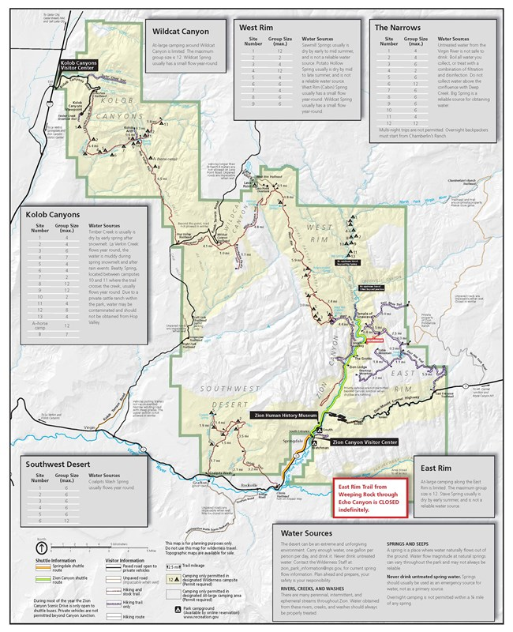

Hikes In Zion

Easy Hikes
Lower Emerald Pools Trail
- Pets: No
- Trailhead Location: Across the road from the Zion Lodge.
- Distance (roundtrip): 1.2 mi / 1.9 km
- Elevation Change: 69 ft / 21 m
- Estimated Hiking Time: 1 hour
- Description: Minor drop-offs. Paved trail leads to the Lower Emerald Pool and waterfalls. (Trail connects to the Kayenta, Middle and Upper Emerald Pools trails, for a longer, moderate hike.) Swimming is prohibited in the Emerald Pools. Restrooms and water filling stations are available at the Zion Lodge.
Grotto Trail
- Pets: No
- Trailhead Location: Behind the shuttle stop at the Zion Lodge. This trail can also be accessed from the Grotto if you walk down canyon and behind the historic stone building.
- Distance (roundtrip): 1 mi / 1.6 km
- Elevation Change: 35 ft / 11 m
- Estimated Hiking Time: 30 minutes
- Description: The trail connects the Zion Lodge to the Grotto and is near the road most of the way. This trail is a great place to view wildlife. Restrooms are available at both the Lodge and the Grotto. When the shuttle is not in operation and the parking is full at the Grotto, this trail is a lovely alternate way to reach the Grotto.
Moderate Hikes
Watchman Trail
- Pets: No
- Trailhead Location: Up canyon and across the road. Stay along the river to begin the trail.
- Distance (roundtrip): 3.3 mi / 5.3 km
- Elevation Change: 368 ft / 112 m
- Estimated Hiking Time: 2 hours
- Description: Moderate drop-offs. Ends at viewpoint of the Temples and Towers, lower Zion Canyon, Watchman Peak, and Springdale. Trail can be muddy when wet. Restrooms and water filling stations are available at the Visitor Center.
Middle Emerald Pools Trail
- Pets: No
- Trailhead Location: Across the street from Zion Lodge and then across the footbridge.
- Distance (roundtrip): 2.2 mi / 3.5 km
- Elevation Change: 150 ft / 46 m
- Estimated Hiking Time: 1.5 hours
- Description: An unpaved climb to a sandstone ledge that parallels the lower trail, but at at a higher level. Moderate drop-offs. Connects to the other Emerald Pools trails and the Kayenta Trail. Restrooms and water filling stations are available at the Zion Lodge.
Strenuous Hikes
Angels Landing
- Pets: No
- Trailhead Location: Across the road from the shuttle stop and then across the footbridge.
- Distance (roundtrip): 5.4 mi / 8.7 km
- Elevation Change: 1,488 ft / 453 m
- Estimated Hiking Time: 4 hours
- Description: Long drop-offs. Not for young children or anyone fearful of heights. Last section is a route along a steep, narrow ridge to the summit.
Observation Point (Closed until further notice)
- Pets: No
- Trailhead Location: Access the East Rim Trail from across the footbridge adjacent to the parking lot. The Observation Point Trail branches off of the East Rim Trail after approximately 2.5 miles.
- Distance (roundtrip): 8.0 mi / 12.9 km
- Elevation Change: 2,148 ft / 655 m
- Estimated Hiking Time: 6 hours
- Description: Long drop-offs. Climbs through Echo Canyon to viewpoint on the rim of Zion Canyon. Access to Cable Mountain, Deertrap Mountain, and East Mesa Trails. Pit toilets are available at the parking area.
The Narrows
- Pets: No
- Trailhead Location: Adjacent to shuttle stop and restrooms.
- Distance (roundtrip): up to 9.4 mi / 15.1 km
- Elevation Change: 334 ft / 102 m
- Estimated Hiking Time: up to 8 hours
- Description: This route is known as the bottom-up Narrows and does not require a permit. Hike in as far as you like, then hike back the way you came. Upstream travel beyond Big Spring or in Orderville Canyon is prohibited. At least 60% of the hike is spent wading, walking, and sometimes swimming in the river. Travel is rough and slippery in cold, fast flowing water. High water levels can prevent access. Obtain additional information prior to starting this hike. Use appropriate equipment and clothing to help protect you. Before your hike, always check the weather and flash flood potential (information updated at the Visitor Center). Flash floods are deadly.